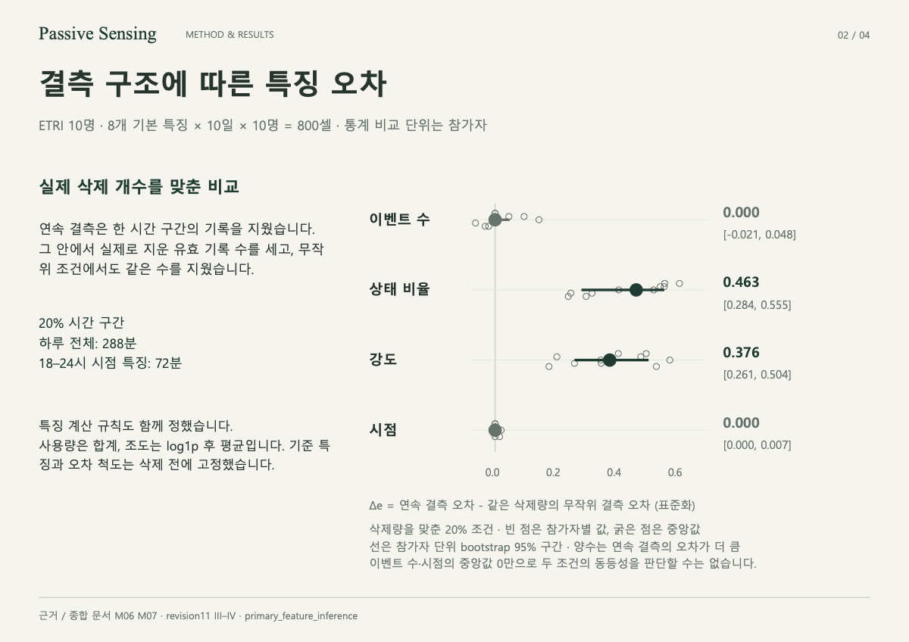

01RESEARCH · ICTC 20262026
Passive Sensing
빈 값의 양보다,
빠지는 패턴에 주목하다.
같은 삭제량에서도 연속 결측과 무작위 결측이 센서 특징에 미치는 영향을 비교했습니다.
10참가자 단위 비교
ICTC 2026단독 저자 · 포스터 발표 완료
Passive Sensing / PROJECT NOTES

실제 삭제 개수를 맞춘 결측 구조 비교 · 기존 연구 포트폴리오 2쪽
기여 · 결과 · 평가 조건 살펴보기 +
본인 기여
특징 계산 규칙 정의 · 실험·검증 · 논문 및 포스터 작성
결과와 판단
ETRI 10명의 상태 비율·강도에서 오차 차이를 관찰했습니다. 연구 전체 판정은 결론 유보입니다.
평가 조건과 한계
상태 비율·강도의 표준화 오차 차이 중앙값은 0.463·0.376입니다. 미래 관측을 활용한 오프라인 복원이며, 복원 후 예측 성능 향상은 검증하지 않았습니다. 실험·코드·검증·집필에 AI 도구를 활용했습니다.